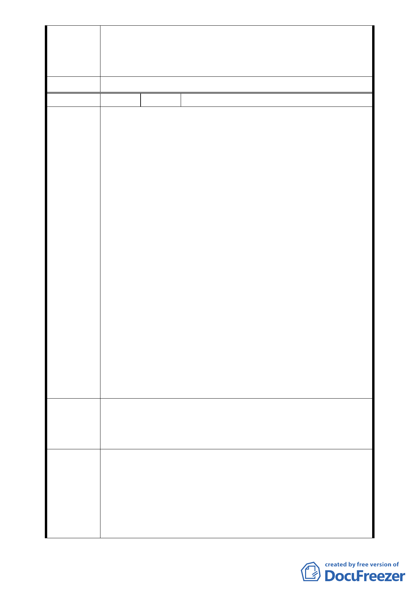

五、 土地使用管制部分，本案地藏王廟未來改建應以既有容
積及量體為限，並於計畫說明書中加註係供堂方自行使
用、不得有營利之行為，至所存放骨灰罈數量是否予以
載述或設限將提報大會決定。
委員會決議 本案主要計畫依市府所提修正後內容通過。
編
號3
陳情人 宋德慈等 6 人（95.9.26 補充說明）
一、原計畫方案中擬設1.日常用品零售業(第17 組)。2. 飲食
業(第 21組)。3.餐飲業(第22組)等; 吾等謹表示反對。蓋
佛門聖地乃莊嚴肅穆脫離凡塵，經營商業實為不倫。若假
借宗教之名行營利之實更為不智，且招非議，請予刪除。
二、依現行建築法令，樓地板面積超過 240 平方公尺 (72 坪 )
必須有2座直通樓梯及出入口，以供逃生之用。依據此一精
神，慈惠堂及週邊土地擬變更都市計畫者共15645平方公尺
(4733坪)，目前僅有福德街251巷為唯一之道路。本巷底寬
度只有5米，更造成瓶頸狀態。對於防災逃生大受影響。因
此吾等要求開闢第二條進出道路，以供逃生疏散之用。
三、建議在福德街309巷底另開闢一條道路通達停車場，長度約
陳情理由
100公尺，寬約8公尺，以及變更淺綠色部分土地為停車場
用地 (現做為停車場，但原有道路遭封閉造成荒廢)。此舉
一來開闢第二條道路對災難逃生有莫大助益，二來可解決
附近居民停車問題及慈惠堂辦理各項活動時來賓之停車問
題。
四、慈惠堂不得以各種名義或方式興建靈骨塔，現有骨灰罈請
勸導其搬離。
五、對慈惠堂現有之違建部分，必須在兼顧法理情之原則下審
慎處理，萬不可以變更都市計畫之方式讓其就地合法。若
全台北市十餘萬之違建要求比照辦理又當如何處理?已被
拆除之違建業者叉情何以堪?此舉不但有損政府威信，且必
遭受社會大眾之非議與責難 !
一、慈惠堂目前營運正常並未受都市計畫變更之影響。故以維
建議辦法
持現狀為宜。
二、第二條進出道路之開闢確有必要，待通路開闢交通得以紓
解後再行檢討都市計畫亦不為遲。
一、 本案土地使用允許第 17、21、22 組之使用，係考量宗教
團體興辦公益活動需求及基地開發之附屬設施，並規定
專案小組
審查結論
其使用樓地板面積不得超過基地總樓地板面積之 5％，以
降低對環境衝擊與髒亂。
二、 福德街 309 巷之打通，因現階段仍涉及私有產權及沉砂
池用地之變更疑慮，建議市府納入本區域聯外道路系統
之中長期發展計畫。
- 10 -